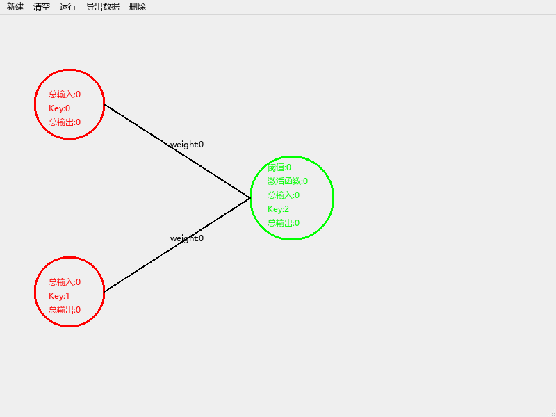
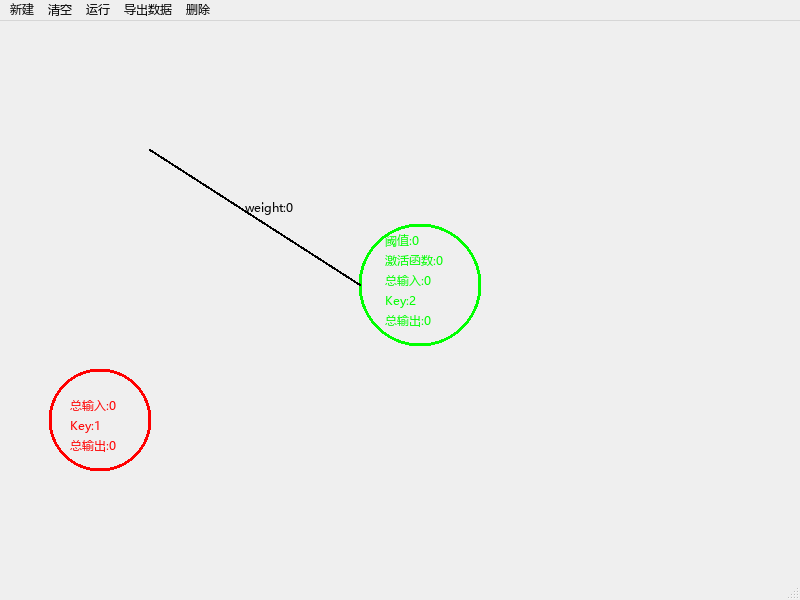
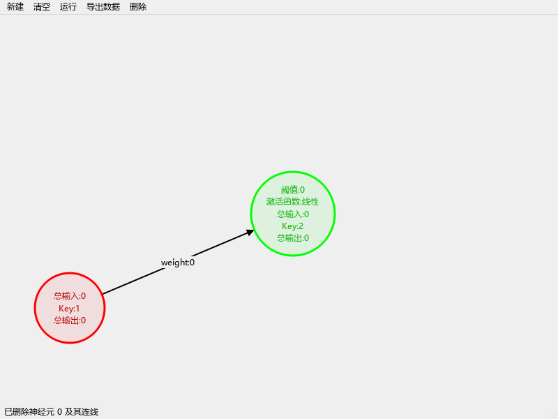
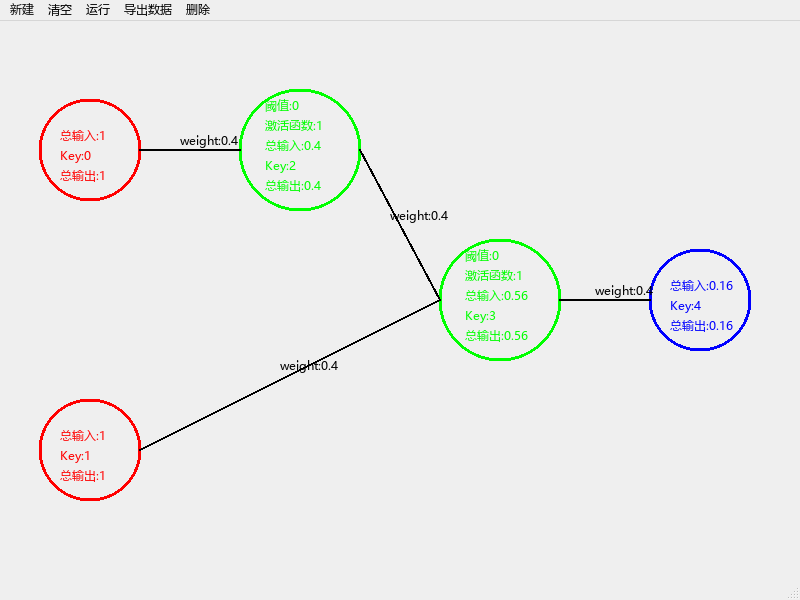
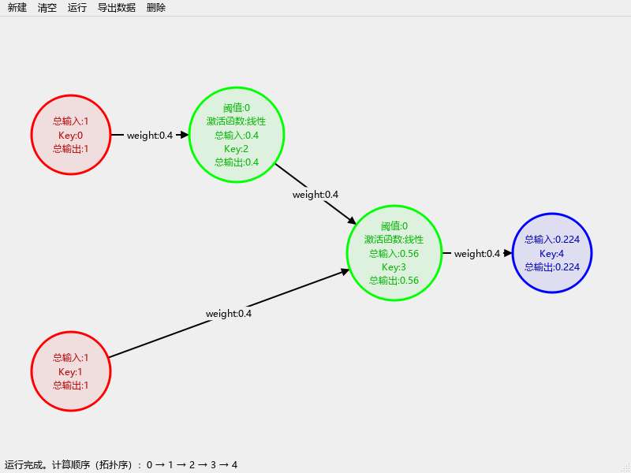
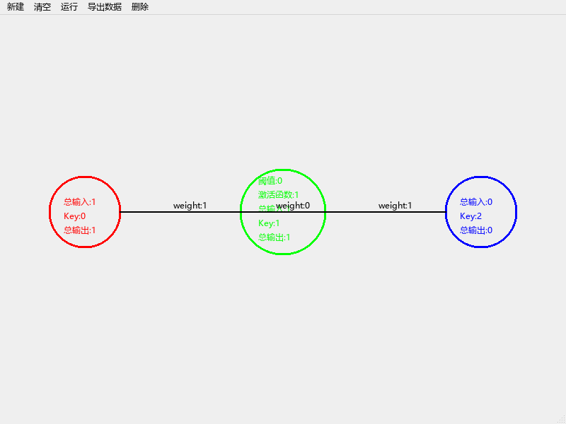
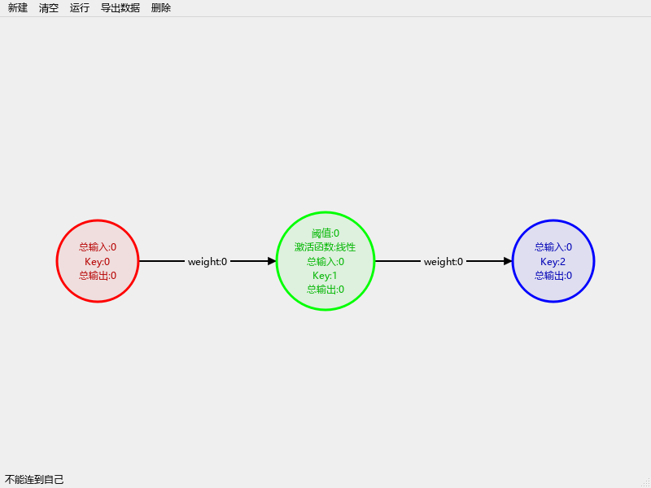
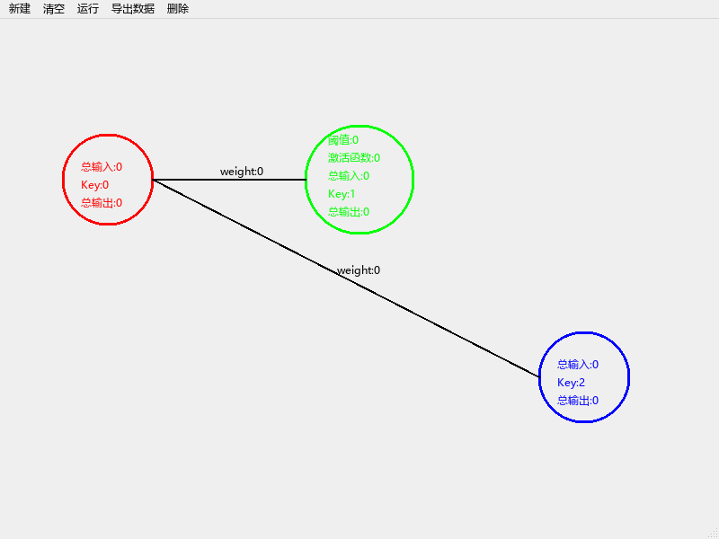
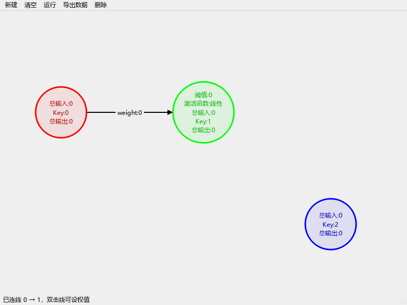
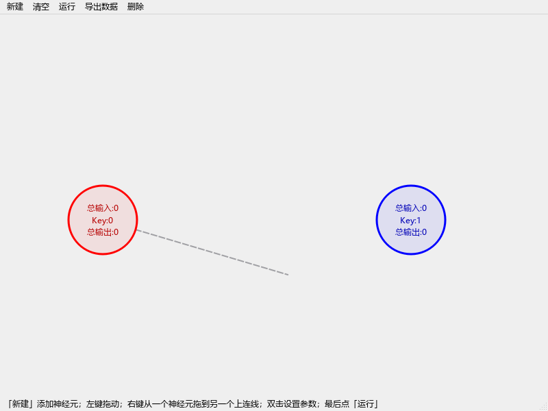

ANN 神经元模拟器 · 修改记录
- 日期：2026-11-09
- 基线：git
4ffc9e2（2021-12-07，提交信息finish2），也就是数据结构课设最后的版本 - 改后的代码：
E:\Claude code\ann-qt。原来的C:\Users\67495\Documents\ANN没动过 - 环境：Qt 6.1.3 + MinGW 8.1.0 64-bit（MinGW：Minimalist GNU for Windows，Windows 上的 GCC 工具链；GCC：GNU Compiler Collection，GNU 编译器套件）
- 阅读：同目录的
修改记录.html是这份文档的网页版（带目录，截图可点开看原图），改了本文件后运行python docs/build_html.py重新生成
0. 一页看完
| 修改前 | 修改后 | |
|---|---|---|
| 实际复现出的问题 | 17 条（复现程序逐条跑过，见 §5.1） | 全部修好，每条都有对应的自动化测试 |
| 自动化测试 | 没有 | 41 个用例，全部通过 |
| 编译 | Documents\ANN 现在的工作区编译失败；git 里的版本有 41 条警告 |
0 警告、0 错误 |
| 什么都不做，空闲 2 秒 | 重绘 3607 次，CPU 时间 1969 ms（一个核跑满） | 重绘 0 次，CPU 时间 0 ms |
| 有跳层连接的网络（§2.2 的例子） | 输出 0.16（错） | 输出 0.224（对） |
| 一次前向计算（70 个神经元、1200 条边） | 2231 ms | 0.077 ms |
| 代码结构 | 同一份数据存两份（界面一份、图一份），3 个几乎一样的神经元类 | 只有一份数据（Network），画布只负责显示和交互 |
你记得的“删除”问题确实存在，而且不止一处：R1（删神经元删错线）、R2（删除循环漏删）、R3（删过线后，新线的权值不参与计算）、R14（“删除线”和“删除点”共用一个开关）、R15（删线后结果不清零）。
只有一处会改变计算结果（R16）：阈值原来是“激活之后再减”，现在改成了“先减再激活”，即 f(x) − θ 改成 f(x − θ)。2026-11-09 已确认保留新公式；原公式的问题和换回去的方法留在 §2.2 备查。
1. 找到的项目
Qt Creator 最近打开的项目列表里，第一个就是 Documents\ANN\ANN.pro。电脑上一共有三份：
| 位置 | 是什么 |
|---|---|
C:\Users\67495\Documents\ANN |
Qt Creator 打开的这份，是 git 仓库，HEAD = 4ffc9e2 |
桌面 大学\大三\大三上\数据结构\…课设\ANN |
交课设时拷的副本，内容和 4ffc9e2 一样 |
桌面 大学\ann-master |
从 Gitee 下载的 4ffc9e2 压缩包 |
Documents\ANN 里有没提交的改动：dialog.ui 在 2022-06-28 被 Qt Creator 的空白对话框模板覆盖，“激活函数”两个单选框和“阈值”输入框都没了。可是 dialog.cpp 还在用 ui->Yuzhi、ui->func1、ui->func2，所以这份现在编译会报 3 个错。副本里先按 git HEAD 恢复了 dialog.*，再在这个基础上修改。
2. 问题清单
编号和复现程序、测试用例里的编号一一对应。代码位置都是指原版（4ffc9e2）。
2.1 删除相关
R1 删神经元时删错了线
-
现象：两个输入神经元 0、1 都连到隐层 2，删掉 0 以后，0 的线还挂在原处，1 的线反而没了。界面上的数据和计算用的数据从此对不上。
删除前 删除 0 号之后（原版） 删除 0 号之后（新版） 


-
原因：
mainwindow.cpp:339-341（隐层 360-362、输出 381-383 是同样的写法）a.delvertax(Ineure[i].getkey()); Ineure.erase(Ineure.begin()+i); // 第 i 个删掉，后面的元素整体往前挪一格 delInputneure(Ineure[i]); // 这时的 Ineure[i] 已经是“下一个”神经元了如果删的正好是最后一个，
Ineure[i]就越界了，属于 UB（Undefined Behavior，未定义行为）。在 MinGW 上读到的往往还是刚删掉那个元素的旧内存，所以有时候看起来“没问题”，这类 bug 因此很难察觉。 -
修改：删除统一走
Network::removeNeuron(id)：按 id 找到神经元，把它和相连的线在同一个地方一起删掉，erase 之后不再用下标去取元素。
R2 删除循环会漏删
- 现象：隐层神经元有两条出线时，删掉它只删得掉一条。
- 原因：
mainwindow.cpp:574-579、583-596、601-606，adjacency_list.cpp:55-60、76-92都是同一种写法：
另外for(int i=0;i<(int)tp.size();i++){ if(...){ tp.erase(tp.begin()+i); i=0; } // 设成 0 以后 for 还会执行 i++，下一轮从 1 开始，新的 tp[0] 被跳过 }mainwindow.cpp:586、593在 erase 之后马上qDebug()<<tp[i]…，也可能越界。 - 修改：用 erase-remove 惯用法，一遍扫完：
m_edges.erase(std::remove_if(m_edges.begin(), m_edges.end(), [id](const Edge &e) { return e.from == id || e.to == id; }), m_edges.end());remove_if把要保留的元素挪到前面，返回“新的结尾”；erase再一次截掉后面那段。如果想继续用下标循环，正确写法是 erase 之后i--，或者从后往前遍历。
R3 删过线以后，新连的线设了权值也不参与计算
-
现象：连一条线 → 删掉 → 再连一条 → 设输入 1、权值 2 → 运行，输出是 0，不是 2。线上显示的明明是“weight:2”。
-
原因：同一条线有两套编号。界面用
transkey，只增不减（mainwindow.cpp:474-477、487-490）；图里却在addEdge里改成了当前边数m（adjacency_list.cpp:22），删线时m--（第 62 行）。删过一次之后两套编号就错开了：设权值的intransport（319-327 行）按编号去图里找，找不到，权值就没传过去。更糟的是，图里可能出现两条编号相同的边，删一条会连另一条一起删。delvertax删入边时还漏了m--（第 85 行），编号偏得更厉害。 -
修改：只保留一份数据，边的 id 由
Network统一分配，只增不减、永不复用。不存在第二份数据，也就不存在“两边对不上”。
R3b 点“清空”之后，重新搭同一个网络，结果变成 0
- 原因：清空时（
mainwindow.cpp:65-73）把key归零了，transkey却没归零；clrdesk()又把图里的m归零（adjacency_list.cpp:254-262）。于是清空后的第一条线编号就对不上，和 R3 是同一个问题。 - 修改：
Network::clear()把两个计数器一起归零。
R14 “删除线”和“删除点”其实是同一个开关
-
现象：选了“删除线”，点到神经元上，神经元照样被删；点了空白处，删除模式仍然挂着，界面也没有任何提示，下一次想拖神经元时，一点它就被删了。
-
原因：两个菜单项都只是
deleteallkind=1（mainwindow.cpp:93-104），而按下鼠标时先检查神经元、后检查线（337、358、379、405 行）。 -
修改：画布上有三种独立的模式
Mode { Normal, DeleteNeuron, DeleteEdge }。进入删除模式时状态栏给提示，鼠标变成十字，悬停在会被删除的对象上时高亮成橙色。点空白处只提示、不退出，删掉一个之后回到普通模式，Esc 或右键随时取消。
R15 删掉线再运行，结果还是上一次的
- 原因：
TopSort只有在处理“某条进来的线”时才会写这个神经元的值（adjacency_list.cpp:159-168），没有线进来的神经元保持旧值，retOutput又把旧值抄回界面。 - 修改：
run()开始前先把所有非输入神经元的总输入、总输出清零。
2.2 计算相关
R4 有“跳层连接”时，拓扑排序算错
-
例子：0→2、1→3、2→3、3→4，权值都是 0.4，两个输入都是 1。2、3 是隐层（线性，阈值 0），4 是输出。3 同时收到输入层（1）和隐层（2）的线。
- 正确结果：H2 = 0.4；H3 = 1×0.4 + 0.4×0.4 = 0.56；O4 = 0.56×0.4 = 0.224
- 原版：H3 显示 0.56，O4 却是 0.16 = 0.4×0.4
原版 新版 

-
原因（
adjacency_list.cpp:99-242）：- 每处理完一个节点，就把所有入度为 0 的节点再压一遍队列（209-220 行），同一个节点会被重复入队；
- 每次出队（包括重复的那几次）都会把后继节点的入度减一次（183-192 行），于是入度会提前减到 0，甚至减成负数；
- 队列里存的是节点的拷贝（111、216 行），入队时的“半成品”输出就被冻结在拷贝里了；
- 为了防止重复出队时把同一条线的贡献加两遍，第 144 行用完一条线就把它的权值设成 0。这个补丁让普通的分层网络碰巧算对，但修正后的值也就再也传不出去了。
以上面的例子逐步看：
步 出队 发生了什么 1 I0 H2 收到 0.4，入度 1→0；I1、H2 入队（I1 是第二次入队） 2 I1 H3 收到 0.4，入度 2→1 3 I1（重复） 权值已清零，不再累加，但又把 H3 的入度减了一次：1→0。这时 H2 还没传过来，H3 带着半成品输出 0.4 入队 4 H2 H3 的总输入变成 0.56，是对的，可队列里那份 H3 拷贝还是 0.4 7 H3（第 3 步入队的那份） 用 0.4 往下传：O4 = 0.4×0.4 = 0.16 ✗ -
修改：换成标准的 Kahn 拓扑排序（
network.cpp的run()）：- 先由边表建出邻接表和入度表，O(V+E)；
- 每条边只让入度减一次；节点在入度减到 0 的那一刻入队，只入队一次；
- 队列里存下标，不存拷贝；输出在出队时才计算，这时它的所有上游一定都已经算完；
- 最后检查“算到的个数是否等于总数”，少了就说明有环（原版数了
cnt，却从没用它判断过）。
R9 可以连自环（以及环路），运行时悄悄算不出来
-
现象：右键从隐层拖回它自己，生成一条自环。运行后，这个神经元自己显示输出 1，下游的输出神经元却是 0，没有任何提示。
-
原因：连线时不检查自环、重复连线、成环（
mainwindow.cpp:467-495）；环上的节点入度永远减不到 0，TopSort也不报错。 -
修改：
Network::addEdge统一检查连线规则，不合法就拒绝，状态栏说明原因：- 不能连到自己；不能重复连同一对神经元；输出神经元不能当起点；不能连向输入神经元；
- 不能成环：加 from→to 之前，先用 BFS（Breadth-First Search，广度优先搜索）看能不能从 to 走回 from，能走回去就说明加上这条线会成环。前馈网络本来就必须是 DAG（Directed Acyclic Graph，有向无环图），否则没法按拓扑序计算；
run()里仍然保留“有环”的检查和提示，作为兜底。
原版：自环被接受 新版：拒绝，状态栏说明原因 

R16 阈值的用法（语义修正，会改变结果）
-
原来（
hidden_layer.cpp:46-66）：输出 = f(总输入) − θ。用阶跃函数时，输出是 1−θ 或 −θ，不再是 0/1；用线性函数时，阈值也不影响饱和区。 -
现在：输出 = f(总输入 − θ)，也就是标准的 M-P（McCulloch–Pitts）神经元模型 y = f(Σ wᵢxᵢ − θ)，教材里的标准写法，比如周志华《机器学习》5.1 节。
激活函数 总输入 θ 原来 f(x)−θ 现在 f(x−θ) 阶跃 0.6 0.5 0.5 1 阶跃 0.2 0.5 0.5（和上一行一样，阈值没起到“门槛”作用） 0 阶跃 −0.3 0.5 −0.5 0 线性（限幅 ±1） 2.0 0.5 0.5 1 线性（限幅 ±1） 0.3 0.1 0.2 0.2（未饱和时两者一样） -
2026-11-09 已确认采用新公式。 以后如果需要换回原来的公式，把
network.cpp的run()里这一行cur.output = activate(cur.activation, cur.input - cur.threshold);改成cur.output = activate(cur.activation, cur.input) - cur.threshold;，再改一下tests/tst_ann.cpp里activationFunctions的期望值就行。
2.3 交互相关
R5 对话框点“取消”，原来的值会被清成 0
-
原因：
exec()的返回值没有判断（mainwindow.cpp:507-514、526-538、555-562），点取消也照样去读输入框。空字符串toFloat()得 0；两个单选框都没选时getflag()返回 0，激活函数直接失效。 -
修改：只有
exec() == QDialog::Accepted才写回。对话框打开时预填当前值并全选，激活函数默认选中“线性”。输入框加了QDoubleValidator（只能输数字），并重写了accept()：填的不是数字时弹提示、不关闭对话框（原来toFloat()失败也悄悄变成 0）。
R8 右键从空白处拖到神经元上，也会凭空连出一条线
-
原因：连线用的临时对象
tmp是成员变量（mainwindow.h:62）。在空白处按下右键不会重设它的起点（mainwindow.cpp:415-433），松开时只要落在神经元上就建线（467-495 行），于是沿用了上一次的起点。第一次就从空白处拖的话，起点是未初始化的随机值。 -
修改：只有在神经元上按下右键才记住起点（
m_linkFrom），否则什么都不做；松开时只有起点有效才连线。拖动过程中画一条灰色虚线做预览。原来本想画预览线，但mouseMoveEvent里用的是ev->button()（319 行），移动事件里它永远是NoButton，所以预览线从来没出现过；应该用buttons()。原版：多出一条 0→2 新版：不生成 新版：拖动时的虚线预览 


R10 从右往左连的线点不中（删不掉，也设不了权值）
-
原因：判断“点没点中线”（
mainwindow.cpp:401-405、548-553）时：- 要求
x1 < x < x2，从右往左的线永远不满足； - 竖直的线
x1 == x2，求斜率时除以 0； - 用的是“竖直方向的距离 < 3 像素”，线越陡，横向能点中的范围就越窄；
- 线的端点固定是“起点圆的右边缘 → 终点圆的左边缘”（420、428、472、485 行），目标在左边时，线会横穿两个圆。
- 要求
-
修改：
- 用点到线段的距离：把点投影到线段上，投影参数 t 夹在 [0, 1] 内，再求点到投影点的距离，≤ 6 像素就算点中，方向、角度都不影响。点线中间的权值标签也算点中；
- 线的端点沿两个圆心的连线方向，从一个圆周画到另一个圆周，画的时候实时计算；末端加箭头，表示方向。
R11、R12 拖动：叠在一起的神经元分不开；鼠标一快就拖不动
- 原因：
- 按下时每一层各自找一个命中的神经元，把它标记成“正在拖”（
mainwindow.cpp:330-395）。输入神经元和隐层神经元叠在一起时，两个都被标记，拖一个，两个一起动，从此分不开； - 移动时每次都重新判断“鼠标还在不在圆的外接正方形里”（262、279、300 行），鼠标一次移出 50 像素就跟丢了；
- 松开时判断的是
ev->buttons() == Qt::LeftButton（438 行），可松开的那一刻左键已经不在buttons()里了，所以“正在拖”的标记永远清不掉。
- 按下时每一层各自找一个命中的神经元，把它标记成“正在拖”（
- 修改：按下时只取最上面的那一个神经元（倒序查找，用真正的圆形判断），记下它的 id 和“按下点相对圆心的偏移”；移动时直接移动这个神经元，不再重新判断命中，并限制在画布范围内；松开时清掉。
2.4 资源、健壮性、代码质量
R6 成员变量没初始化
hidden_layer的flag、jiflag（hidden_layer.h:10、13），输入/输出神经元的flag，transport的from/to/key/坐标（transport.h:13-16）都没有初值。读未初始化的变量是 UB：复现时同一个新建的隐层神经元，界面那份读到 0，图里那份读到 32763。激活函数编号不是 1 或 2 时，激活函数直接不起作用，输出一直是 0。- 修改：
Neuron、Edge的每个字段都写了默认初值（C++11 的“成员默认初始化”），新建隐层神经元默认是线性激活、阈值 0。
R7 空闲时也一直重绘，占满一个 CPU 核
- 原因：
paintEvent调用的drawNeure()、drawTran()结尾都调了update()（mainwindow.cpp:238、254）。update()会安排下一次重绘，于是画完马上再画，永不停止。实测空闲 2 秒内重绘 3607 次，进程 CPU 时间 1969 ms，相当于一个核跑满（另一次没加载字体时，2 秒重绘了 10958 次）。 - 修改：
paintEvent里不调update()，只在数据或交互状态变化时才调。删除模式下的悬停高亮，也只在“指着的对象”变了时才重绘。实测空闲 2 秒：重绘 0 次，CPU 0 ms。
R13 每次双击都 new 一个对话框，用完不释放
- 原因：
new Dialog3(this)之类（mainwindow.cpp:507、526、555），父对象是主窗口，所以要等主窗口关掉才释放，双击一次就多一个对象。 - 修改：对话框建在栈上（
Dialog3 dlg(this);），函数结束时自动销毁。这就是 RAII（Resource Acquisition Is Initialization，资源获取即初始化），对象的生命周期和作用域绑在一起。
其他
- 编译警告 41 条：都是
-Wparentheses，条件里把逻辑与&&写成了按位与&，例如x>a & x<b。比较结果是 0/1，所以碰巧算得对，但不会短路求值，可读性也差。重写后 0 警告。 - 导出路径写死（
mainwindow.cpp:109）：写死了本机桌面上的test.txt，换一台电脑就失败，而且打开失败后还接着往里写（111-115 行）。现在弹出“另存为”对话框（默认放在“文档”目录），失败时给出提示；文件存成带 BOM（Byte Order Mark，字节顺序标记）的 UTF-8（8-bit Unicode Transformation Format），老版本记事本打开中文也不乱码。导出的文本格式和原来完全一样。 - 死代码：基类
Neure被私有继承，key又被子类同名成员遮住，实际上没用；outputnerue.h/.cpp是拼错名字的空类，没参与编译；#define MAX 30、node.weight（int 型，没用到）、mainwindow.h里没用的Ui::Dialog *id等指针、头文件里的using namespace std;都去掉了。 - 新建的神经元都摞在同一个点上：现在在本层那一列里从上往下找空位（输入 x=100、隐层 x=300、输出 x=500，和原来的位置一致）。
- 直接画在
QMainWindow上：菜单栏会盖住上面一截。现在画布是单独的中心部件（central widget）。 - 一些小改进：抗锯齿；线末端有箭头；权值标签带底色；文字颜色比圆圈深一点（纯绿上的绿字原来很难认）；每一步操作都在状态栏给反馈；“清空”前要确认（这一步不能撤销）。
3. 结构调整：为什么不逐行打补丁
3.1 根本问题：同一份数据存了两份
修改前
MainWindow
├─ Ineure / Hneure / Oneure / tp ← 界面用的一份（位置、显示的值、线的端点坐标）
└─ Adjacency_List a
├─ k（结点：入度、in、out）
├─ tr（边） ← 计算用的又一份
└─ Inputne / hidden / Outne
每次加点、连线、设值、删除，都要两边各改一次；运行前还要把界面上的值抄进图（inInput / inhidden / intransport），运行后再抄回来（retInput / retHidden / retOutput）。只要一处漏改、编号对不上，两边就不一致，R1、R3、R3b、R15 都是这么来的。逐行打补丁只能堵住已经发现的漏洞，结构不变，下次加功能还会再漏。
修改后
MainWindow ─── 菜单、对话框、导出
├─ Network m_net ← 唯一的数据：neurons、edges；所有修改都走它的成员函数
└─ NetworkCanvas ← 只读 m_net 来画；只记“正在拖谁 / 正在从谁连线 / 当前模式”
3.2 几个具体的设计决定
- 存 id，不存下标，也不存指针：下标在 erase 之后会变（R1 的根源），指向 vector 元素的指针在扩容后会失效。id 只增不减，永不复用。
- 三个神经元类合成一个
Neuron+NeuronKind：原来三个类九成代码相同，接口名却各不一样（getx / getX，getoutput / output / Output，setin / setInput），导致每个鼠标事件处理函数里都有三段几乎一样的循环。 - 线不再存端点坐标：原来每拖一次神经元，都要去更新相关的线；现在画的时候按两端神经元的当前位置计算。
- 邻接表在
run()里临时建：长期存的是边表，画图、命中判断、删除都方便；计算时花 O(V+E) 建出邻接表和入度表，用完就丢。派生出来的数据不长期保存，就不会出现“没同步”。 - 修改只能走
Network的接口：外部拿到的是const指针，只能通过addEdge / removeNeuron / setWeight / setInputValue / setHiddenParams / setPosition修改，连线规则只在addEdge这一处检查。 - 画布和主窗口用信号槽解耦：画布被双击时只发出
neuronActivated(id)/edgeActivated(id)信号，弹哪个对话框由主窗口决定。所以画布可以离开对话框单独测试。
3.3 文件对照
| 原文件 | 新文件 | 说明 |
|---|---|---|
neure.*、inputneure.*、outputneure.*、hidden_layer.* |
network.h（struct Neuron + NeuronKind） |
三个类合成一个 |
transport.* |
network.h（struct Edge） |
不再存端点坐标 |
adjacency_list.* |
network.h / network.cpp（class Network） |
唯一的数据，加上增删改查和 run() |
mainwindow.cpp 里的绘制和鼠标处理 |
networkcanvas.h / .cpp |
画布 |
mainwindow.* |
同名 | 只剩菜单、对话框、导出；mainwindow.cpp 从 615 行减到 193 行 |
dialog*.h / .cpp / .ui |
同名 | 预填当前值、数字校验、取消不改值；.ui 只改了标题、单选框文字、提示、标签高度 |
| — | numberedit.h |
三个对话框共用的“数字输入框”逻辑 |
outputnerue.* |
删除 | 拼错名字的空类 |
| — | tests/ |
自动化测试 |
| — | docs/ |
本记录、截图、复现程序 |
全部源码从 1732 行减到 1400 行（含新加的注释），另有测试 848 行。
4. 优化和用到的东西
| 用到的 | 用在哪 | 解决了什么 |
|---|---|---|
| 单一数据源（single source of truth） | Network |
界面和计算两份数据不一致（R1、R3、R3b、R15） |
| Kahn 拓扑排序 + 入度表 + 临时邻接表，O(V+E) | Network::run() |
跳层连接算错（R4）；原版大约按 V²·E 增长的耗时（§5.4） |
| BFS 可达性判断 | Network::reachable()、addEdge() |
连线时就拒绝环路（R9） |
erase-remove 惯用法（std::remove_if + erase） |
removeNeuron() |
删除循环漏删、越界（R2） |
| 按 id 寻址，id 只增不减 | Network |
erase 后下标错位（R1）、两套编号（R3） |
| 点到线段的距离（向量点积投影） | NetworkCanvas::edgeAt() |
从右往左、竖直、很陡的线点不中（R10） |
交互状态机：Mode 枚举 + 拖动状态 + 连线状态 |
NetworkCanvas |
删除模式混用（R14）、拖动跟丢和粘连（R11、R12）、凭空连线（R8） |
只在数据变化时 update() |
NetworkCanvas |
空闲时一直重绘（R7） |
| 成员默认初始化 | Neuron、Edge |
未初始化变量（R6） |
栈对象 / RAII + 判断 exec() 的返回值 |
MainWindow::editNeuron/editEdge |
对话框泄漏（R13）、点取消却清零（R5） |
QDoubleValidator + 重写 accept() |
numberedit.h、三个对话框 |
填错悄悄变成 0 |
| 信号槽解耦 | 画布 → 主窗口 | 画布可以单独测试 |
QFileDialog + QStandardPaths + 错误处理 + UTF-8 BOM |
导出 | 路径写死、失败后照样写 |
QPainter 抗锯齿、箭头、标签底色 |
绘制 | 看清方向、读清数字 |
Qt Test：数据驱动用例、QSignalSpy、合成鼠标事件、offscreen 平台 |
tests/ |
每条 bug 都有回归测试，能在命令行里自动跑 |
5. 验证
5.1 复现程序：先确认原版的问题都是真的
docs/repro/repro_original.cpp 直接链接原版源码（一行不改）：用 QMouseEvent 模拟鼠标，用定时器自动填写、关闭对话框，跑完检查内部数据。为了读私有成员，用了 #define private public，这是只在测试代码里用的手段。结果 17/17 条复现，完整输出在 docs/repro/repro_report.txt。
5.2 自动化测试：41 个用例全部通过
tests/tst_ann.cpp（Qt Test），分三组：
| 组 | 用例 | 对应 |
|---|---|---|
模型 NetworkTest（25 个） |
idsAreUniqueAndNeverReused |
R3、R3b |
removeNeuronRemovesExactlyItsEdges |
R1、R2 | |
weightWorksAfterDeletingAnEdge |
R3 | |
clearThenRebuildGivesSameResult |
R3b | |
skipConnectionComputedCorrectly、runTwiceDoesNotAccumulate |
R4 | |
runResetsStaleResults |
R15 | |
connectRules（8 组数据：自环、重复、从输出出发、连向输入、成环、不存在、两种合法连线） |
R9 | |
activationFunctions（6 组数据） |
R16 | |
hiddenDefaultsAreDefined |
R6 | |
randomDagOrderAndSums：随机分层 DAG（含跳层），检查顺序是合法拓扑序，且每个神经元的总输入 = 上游输出 × 权值之和 |
R4 | |
reportTextFormat |
导出格式与原来一致 | |
runIsFast |
性能 | |
画布 CanvasTest（10 个，放在真正的主窗口里，用模拟鼠标操作） |
fastDragFollowsMouse |
R12 |
overlappingDragMovesOnlyTop |
R11 | |
rightDragFromEmptySpaceMakesNoEdge |
R8 | |
rightDragShowsPreviewAndCreatesEdge |
R8（预览线） | |
selfLoopRejectedInUi |
R9 | |
deleteNeuronByClick |
R1 | |
deleteRightToLeftAndVerticalEdges |
R10 | |
deleteModesAreSeparateAndCancellable |
R14 | |
doubleClickEmitsSignals |
双击 | |
noRepaintWhenIdle |
R7 | |
主窗口 MainWindowTest（6 个） |
cancelKeepsValuesAndDialogsArePrefilled |
R5 |
okWritesValues、invalidNumberKeepsDialogOpen |
对话框 | |
dialogsAreFreed |
R13 | |
exportWritesUtf8File |
导出 | |
endToEndSkipConnectionViaUi：新建 → 拖动 → 右键连线 → 双击设参数 → 运行，全部走界面 |
R4 |
5.3 前后对比截图
见 §2 各条。截图是测试和复现程序在 offscreen 平台（Qt 不弹窗口、只在内存里渲染）下用 grab() 截的，字体指定为微软雅黑 UI 9pt，和 Windows 上实际运行时接近。
5.4 性能
同一个分层全连接网络（没有跳层连接，原版在这种网络上结果是对的，两边算出来的输出完全一样），跑一次前向计算的耗时。原版编译时关掉了 qDebug，只比算法本身：
| 网络 | 神经元 | 边 | 原版 TopSort |
新版 run() |
|---|---|---|---|---|
| 4-4-2 | 10 | 24 | 2.35 ms | 0.005 ms |
| 10-10-4 | 24 | 140 | 30 ms | 0.016 ms |
| 30-30-10 | 70 | 1200 | 2231 ms | 0.077 ms |
| 60-60-20 | 140 | 4800 | 36671 ms | 0.25 ms |
- 说句公道话：平时手搭十几个神经元，原版也就几毫秒，感觉不到慢。对日常使用来说，这次修改的价值在于结果对了，而不是速度。速度差距要到几十个神经元以上才看得出来。
- 原版的耗时大约按 V²·E 增长：从 30-30-10 到 60-60-20，V 翻倍、E 翻四倍，耗时变成约 16 倍。原因是同一个节点会被重复入队约 V² 次，每次出队都要把所有边扫一遍。
- 新版
run()的耗时和 V+E 成正比。每次跑的数字会有波动（同一个测试两次分别是 0.10 ms 和 0.24 ms），量级不会变。 - 连线时的环检测是一次 BFS，O(V+E)，每次连线只做一次，交互时可以忽略。
5.5 没有验证到的
- 测试里的鼠标是合成事件，在 offscreen 平台下运行，我没有在你的桌面上真的用鼠标点过，建议你在 Qt Creator 里实际点一遍。
- 只在 Qt 6.1.3 MinGW 64-bit 上编译过。代码用了 Qt 6 的接口（
QMouseEvent::position()、QStringConverter），Qt 5 编译不了，.pro里加了版本检查。
6. 怎么编译、运行、测试
Qt Creator
- 打开
E:\Claude code\ann-qt\ANN.pro，第一次打开会让你选 Kit，选 Desktop Qt 6.1.3 MinGW 64-bit； - 运行：Ctrl+R；
- 跑测试：再打开
tests\tst_ann.pro运行，结果显示在“应用程序输出”面板，最后几行Totals: … 0 failed就是全部通过。
命令行（PowerShell，在 E:\Claude code\ann-qt 目录下）
$env:PATH = "D:\Qt\6.1.3\mingw81_64\bin;D:\Qt\Tools\mingw810_64\bin;" + $env:PATH
- 只对当前这个 PowerShell 窗口生效：把 Qt 的工具（
qmake、运行时 DLL）和 MinGW 编译器放到 PATH 最前面，关掉窗口就失效，不改系统设置。
qmake -o build\Makefile ANN.pro -spec win32-g++ "CONFIG+=release"
qmake：读.pro文件，生成 Makefile；-o build\Makefile：Makefile 写到build目录，编译产物不和源码混在一起（影子构建）；-spec win32-g++：目标是 Windows + g++（MinGW）；"CONFIG+=release"：只编 release 版。
mingw32-make -C build -j8
mingw32-make：MinGW 版的 make，按 Makefile 编译、链接；-C build：先进到build目录再执行；-j8：最多 8 个编译任务同时进行。- 注意：不要在 Git Bash 里执行这一步。Git Bash 的
sh.exe在 PATH 里时，make 会用它来执行命令，而 qmake 生成的 Makefile 写的是 cmd 语法。请用 PowerShell 或 cmd。
.\build\release\ANN.exe
- 能直接运行，是因为上面已经把 Qt 的 DLL 目录加进了 PATH。想双击运行，或者拷到别的电脑上，先执行
windeployqt build\release\ANN.exe：它会把程序依赖的 Qt DLL 和平台插件拷到 exe 旁边。
跑测试：
qmake -o tests\build\Makefile tests\tst_ann.pro -spec win32-g++ "CONFIG+=release"
mingw32-make -C tests\build -j8
$env:QT_QPA_PLATFORM = "offscreen"
$env:QT_QPA_FONTDIR = "C:\Windows\Fonts"
.\tests\build\release\tst_ann.exe
- 前两行和上面一样，只是换成测试工程；
QT_QPA_PLATFORM=offscreen：QPA（Qt Platform Abstraction，Qt 平台抽象层）选 offscreen，窗口只在内存里画，不弹出来；不设也能跑，只是会闪过几个窗口；QT_QPA_FONTDIR：offscreen 平台不会自己去找系统字体，不设的话截图里没有字（测试结果不受影响）；- 可选
$env:ANN_SHOTS = "某个目录"：顺便把“修改后”的截图存到那里； - 如果是在没有控制台的环境里运行（比如被别的程序调用、输出被重定向），Qt Test 会把结果写到调试输出而不是屏幕，加
$env:QT_FORCE_STDERR_LOGGING = "1"就能打印出来。这次我在工具环境里就遇到了这种情况。
重跑原版复现程序（可选）：
git archive -o docs/repro/orig.tar 4ffc9e2
mkdir docs/repro/orig
tar -xf docs/repro/orig.tar -C docs/repro/orig
qmake -o docs\repro\build\Makefile docs\repro\repro_original.pro -spec win32-g++ "CONFIG+=release"
mingw32-make -C docs\repro\build -j8
.\docs\repro\build\release\repro_original.exe docs\repro\out
git archive -o docs/repro/orig.tar 4ffc9e2：把4ffc9e2这个提交里的全部文件（也就是原版）打包成一个 tar 文件，不影响当前的工作区；tar -xf … -C docs/repro/orig：-x解包，-f指定包文件，-C解到哪个目录。Windows 10 自带tar。这里分成两步，而不是用管道git archive 4ffc9e2 | tar -x，是因为 PowerShell 5.1 的管道会把二进制数据当文本处理，包会坏掉；- 最后一行的参数是输出目录，
repro_report.txt和截图会写到那里。docs/repro/orig/和orig.tar已经写进.gitignore。
7. 新版怎么操作
| 想做什么 | 怎么做 |
|---|---|
| 加神经元 | 菜单“新建” → 输入 / 隐层 / 输出神经元（自动排在各自那一列的空位上） |
| 移动 | 左键按住拖动 |
| 连线 | 右键在起点神经元上按下，拖到终点神经元上松开（拖动时有虚线预览）。不合法的连线会被拒绝，状态栏说明原因 |
| 设置初值 / 阈值和激活函数 / 权值 | 双击输入神经元 / 隐层神经元 / 线（或线上的权值标签）。对话框里是当前值，点“取消”不做任何修改 |
| 删除 | 菜单“删除” → 删除点 / 删除线，再点要删的对象（会高亮）。删一个后自动退出；Esc 或右键取消 |
| 计算 | 菜单“运行”，状态栏显示计算顺序（拓扑序） |
| 导出 | 菜单“导出数据” → 输出 txt，选择保存位置 |
| 清空 | 菜单“清空”，会先确认 |
8. 没做的、可以接着做的
- 网络不能保存和读取（原版也没有）：可以用
QJsonDocument存成 JSON。 - 没有撤销 / 重做：可以用
QUndoStack。 - 不能训练，只能做前向计算：要做 BP（Back Propagation，反向传播）算是新功能，不属于修 bug。
- 画布不能滚动、缩放：网络大了会放不下。
- git：所有改动都在
E:\Claude code\ann-qt的工作区里，没有提交，HEAD 还是 2021 年的原版，git diff能看到全部改动。ANN.pro.user（Qt Creator 的本机配置，里面写死了旧的构建目录）从副本里删掉了，git status里会显示为删除；.gitignore里补上了它和构建目录。 - 原来的
Documents\ANN没动，包括那个被覆盖了的dialog.ui。